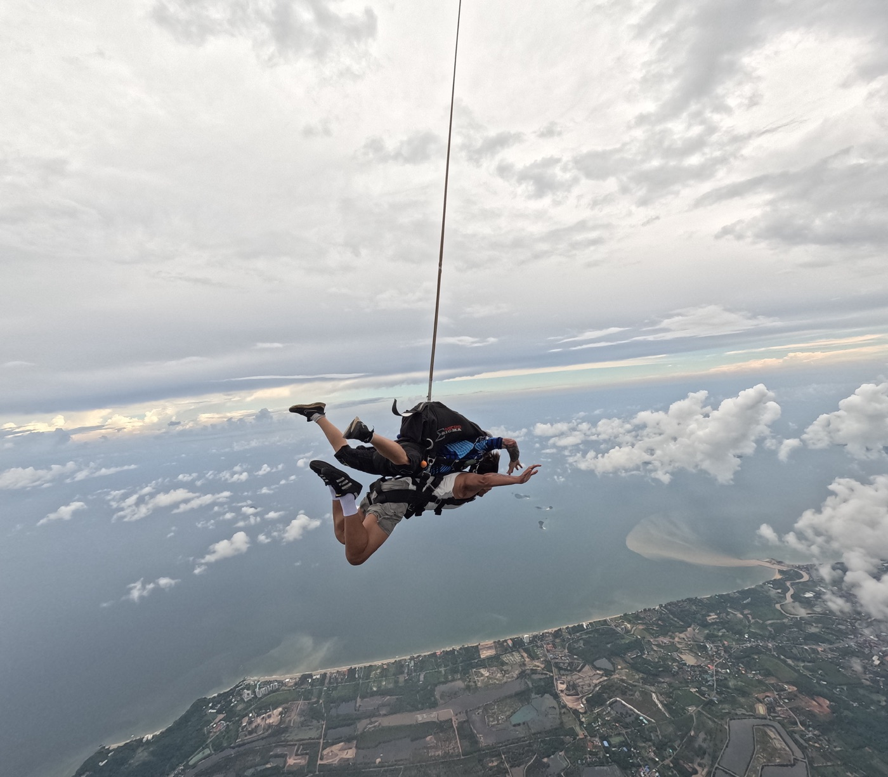
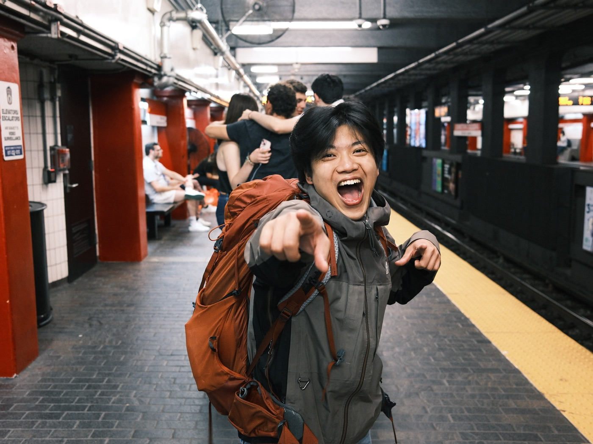

Selected publications
-
ECHOES: An Adaptive LLM-Powered AR Glasses Docent for Evidence-Grounded Urban Heritage Interpretation
Bang Xiao, Baosheng Jin, Jinhan Niu, Xingchen Zhang, Hua Shen

HCI researcher at NYU Shanghai.
Bang Xiao (Evan, 肖邦) is an HCI researcher and a senior at NYU Shanghai, majoring in Interactive Media Arts with a minor in Computer Science. Evan is a research assistant in the Digital Heritage Lab, advised by Hua Shen.
Evan's research explores two connected questions: how interacting with AI reshapes the way people think, feel, and pay attention, and how those insights can be used to design AI systems that truly fit human needs. As AI moves beyond flat screens into wearables, robots, and physical space, it changes daily behavior in subtle ways.
Bang Xiao, Baosheng Jin, Jinhan Niu, Xingchen Zhang, Hua Shen
Digital Heritage Lab, NYU Shanghai
Interactive Media Arts, NYU Shanghai
NYU Shanghai Robotics Club
Bosssoft, Fuzhou
New York University Shanghai
Douyin AI Innovation Accelerator, ByteDance AI Hackathon
Research grant, NYU Shanghai
NYU Shanghai
National VEX Robotics Elite Competition & VEX World Championship China Selection
8th China University Intelligent Robot Creative Competition
National VEX Robotics Elite Competition & VEX World Championship China Selection
VEX Asia Open Signature Event, VEX U
Other than what I do for research, I also spend a lot of time trying to get as far from a screen as possible. I’ve jumped out of a plane over Pattaya, which was terrifying for about three seconds and then the best view I’ve ever had. I hiked up to the glacier lake at Meili Snow Mountain and stood there with my arms out like an idiot because I couldn’t think of anything else to do. I’ve also been spotted on the Boston subway with a hiking pack bigger than my torso. If you know a good trail, or something slightly scary worth trying, tell me about it.

